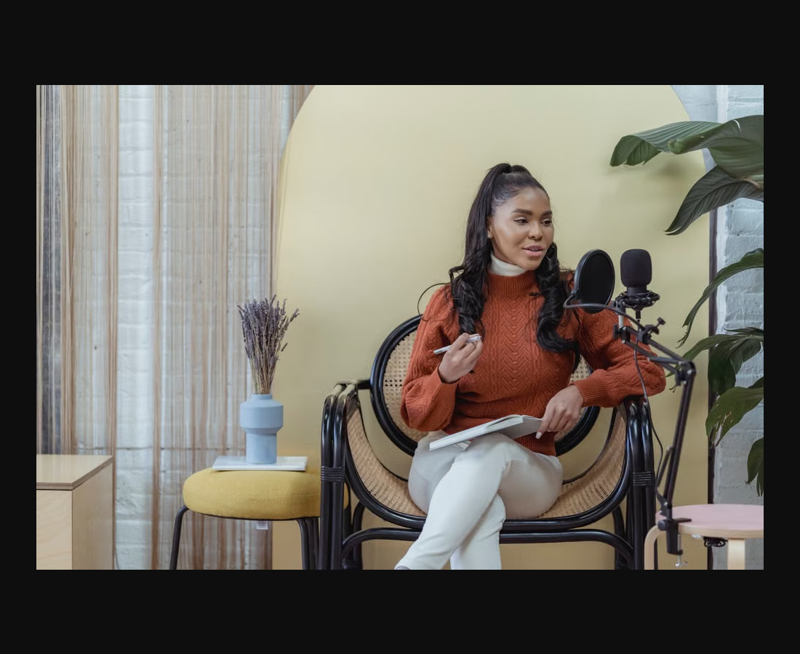

Có bản quyền · được dùng theo licenseblog-06.webp
Được dùng theo Pexels License
/blog/ · /en/blog/
Xem nguồn & bằng chứng
Khớp áo len cam, áo cổ lọ trắng, notebook, ghế mây, micro, lọ hoa và nền vàng. Pexels ID 6954181; tên George Milton được nhiều trang credit độc lập ghi nhận, nhưng trang chi tiết Pexels không trả đủ nội dung khi truy cập. CDN chính thức Pexels phục vụ đúng ảnh.
Pexels cho phép website, blog, marketing và chỉnh sửa; không bắt buộc credit. Vẫn áp dụng hạn chế về ngụ ý người/brand bảo trợ. Không cần mặc định ảnh thiếu hóa đơn là chưa được phép dùng.
Nguồn 1 · Nguồn 2 · Nguồn 3 · Nguồn 4

Ảnh đối chiếu · exact-visual